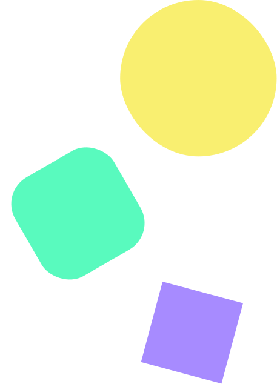

Oi! 👋
Sou o Bruno!
Aos 30 resolvi encarar um antigo sonho e mudar de carreira. Hoje vivo de codar ideias.
DEV. JUNIOR HTML | CSS | JAVASCRIPT | REACT

Sobre mim
lkadjaoljdlojdioajdaiohdiohdaiohadiodhiod adjioajdoiajhdioahjioadhodahoidho açdfjpaodjpdajapiodjadpjdapojdpoja adlkhoahoadhoadhdohdiohdaio sdpojsdpoifjpodjfpoijfpjpofjpojfpofj
-
2
Anos de Experiência -
100%
Satisfação do Cliente -
5
Projetos Comerciais
Formação
-
Designer de Moda.
Graduação Tecnológo.Desenvolvi jeitos novos de e intuitivos de gestar os projetos de moda.
Faculdade Marista
2009-2013 -
Desenv. Full Stack.
Graduação Tecnológo.Desenvolvi jeitos novos de e intuitivos de gestar os projetos de moda.
Infinity School
2022-2023 -
Designer de Moda.
Graduação Tecnológo.Desenvolvi jeitos novos de e intuitivos de gestar os projetos de moda.
Faculdade Marista
2009-2013 -
Designer de Moda.
Graduação Tecnológo.Desenvolvi jeitos novos de e intuitivos de gestar os projetos de moda.
Faculdade Marista
2009-2013